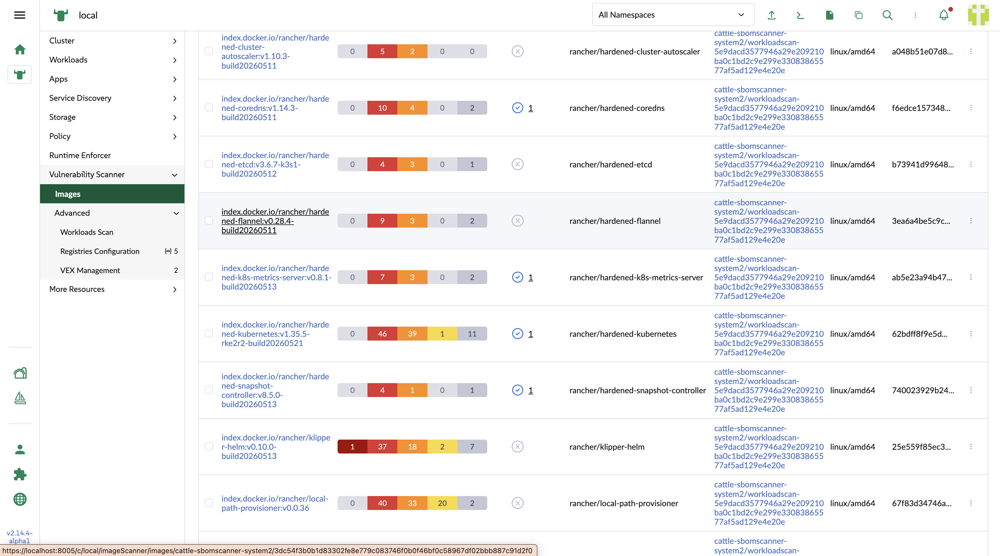
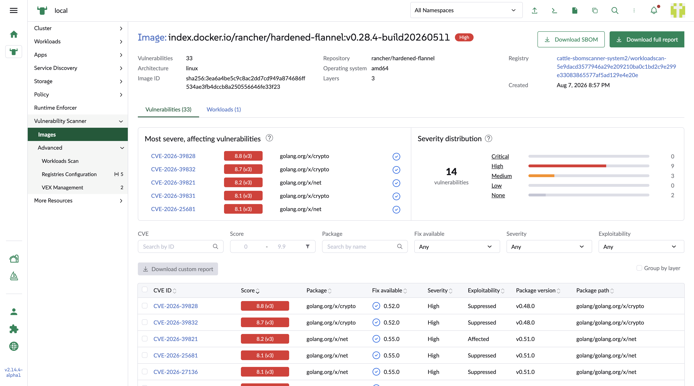
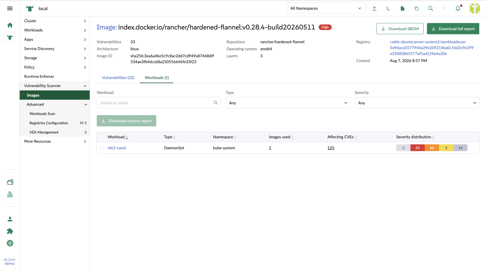
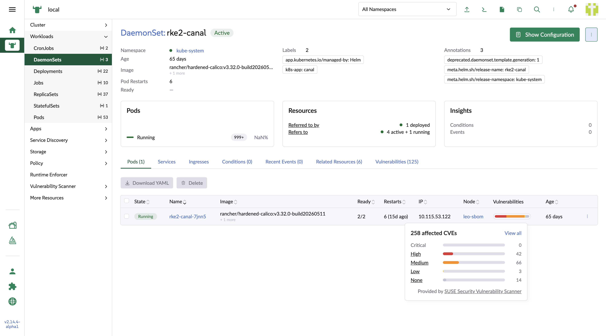
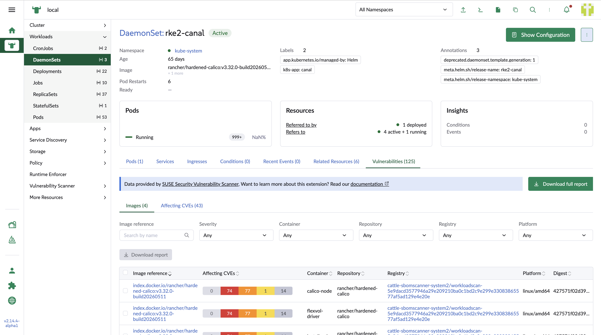
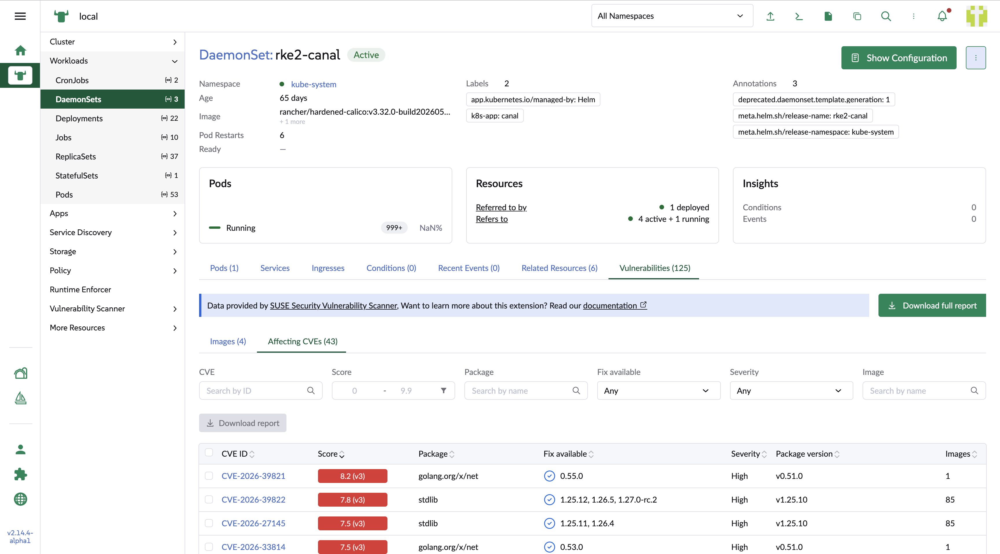

Workload Interaction
The UI extension provides cross-application interaction between its image detail pages and the Rancher workload detail pages.
-
Select a workload image in the image list page.

-
The image detail page opens.

-
Select the
Workloadstab to review the workload list.
-
Select a workload link to go to the workload detail page in Rancher. In the pod list, the UI extension adds a column showing the number of vulnerabilities as a stacked bar, broken down by severity.
Hover over the bar to see a bar chart by severity. Select a severity link to open the
Vulnerabilitiestab with theAffecting CVEssub-tab filtered by the selected severity. Alternatively, selectView allto open theVulnerabilitiestab with theImagessub-tab, which is the default.
-
In the
Imagessub-tab, the table is the same as the image list table, including the per-column filters. Select anImage referenceto open the corresponding image detail page in the UI extension.
-
In the
Affecting CVEssub-tab, the table is the same as the vulnerability list table, including the per-column filters. Select aCVE IDto open the corresponding CVE detail page in the UI extension.
From this page you can also export a vulnerability report, either as a full report or as a report limited to your current selection.